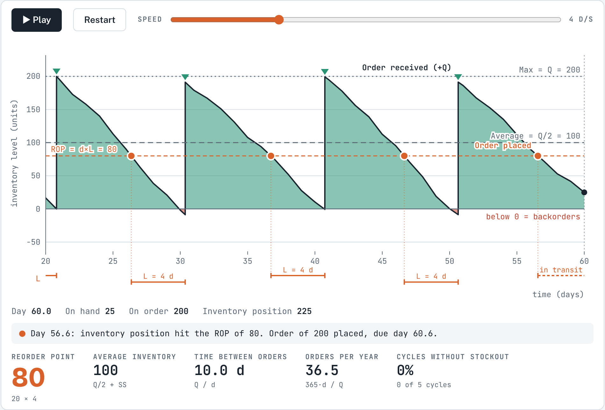
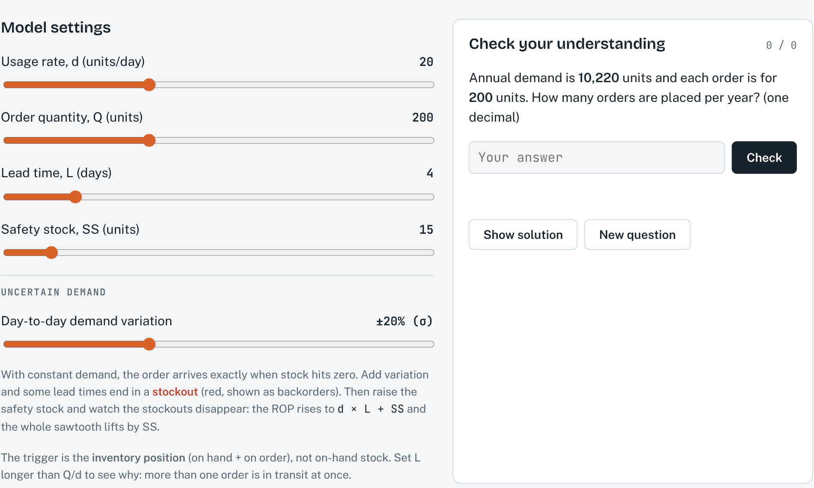

1About this simulation
Every inventory system has to answer two questions: how much to order and when to order. Models such as the EOQ answer the first question with an order quantity Q. This simulation is about the second question. It shows the familiar "sawtooth" pattern of stock being used up and replenished, and lets you watch the moment an order is placed at the reorder point (ROP) and the moment it arrives one lead time later.
You can change the usage rate, the order quantity, the lead time and the safety stock, and you can add day-to-day variation in demand. You will see how uncertain demand causes stockouts and how safety stock protects against them.
After working through this guide, you should be able to:
- read the sawtooth chart: order quantity, usage rate, lead time, maximum and average inventory;
- calculate the reorder point with and without safety stock, the time between orders and the number of orders per year;
- explain how variable demand leads to stockouts during the lead time, and size safety stock for a target service level;
- explain why orders are triggered by the inventory position (on hand + on order) and not by the stock on the shelf.
2Theory background
The sawtooth pattern
In a fixed-quantity (Q) system the stock level is watched continuously. Stock falls at the usage rate d. When it reaches the reorder point, an order of Q units is placed. The order arrives after the lead time L, and stock jumps up by Q. Repeating this gives the sawtooth pattern.
The basic model assumes that demand is known and constant, the lead time is known and constant, the whole order arrives at once, and there are no stockouts. Under these assumptions the order arrives exactly when the stock reaches zero.
Notation
The notation is the same as in the course formula sheet. The simulation runs in days.
| Symbol | Meaning |
|---|---|
| D, d | Annual demand (units/year); daily demand or usage rate (units/day) |
| Q | Order quantity (units) |
| L | Lead time (days) from placing an order to receiving it |
| ROP, SS | Reorder point; safety stock (units) |
| N | Number of orders per year |
| σd, σdLT | Standard deviation of daily demand; of demand during the lead time |
| Z | Standard normal value for the chosen service level (see the Z table on the formula sheet) |
Constant demand: the basic formulas
Worked example (default settings). d = 20 units/day, Q = 200 units, L = 4 days.
- ROP = 20 × 4 = 80 units: an order is placed when 80 units are left, which is exactly four days of usage.
- Average inventory = 200 / 2 = 100 units.
- Time between orders = 200 / 20 = 10 days, so N = 365 / 10 = 36.5 orders per year (the simulation uses a 365-day year).
Note that the ROP does not depend on Q. Changing the order quantity changes how often you order and how much stock you hold on average, but not when you order.
Uncertain demand, service level and safety stock
In practice demand varies from day to day. The risky period is the lead time: once the order is placed, nothing more can be done until it arrives. If demand during the lead time is higher than expected, the stock runs out before the delivery. A stockout occurs, and in this simulation the unmet demand is backordered (shown below zero).
Safety stock is extra stock held as a buffer against this risk. It raises the reorder point:
The service level is the probability of not running out during a lead time, i.e. one minus the stockout risk. A 95% service level (Z = 1.645) means that about 5 replenishment cycles in 100 still end in a stockout. Higher service levels need much more safety stock, because Z grows faster as the service level approaches 100%.
Worked example. In the simulation, "day-to-day demand variation ±20% (σ)" means σd = 20% of d = 0.20 × 20 = 4 units/day. Over a 4-day lead time σdLT = 4 × √4 = 8 units. For a 95% service level: SS = 1.645 × 8 ≈ 13 units, so ROP ≈ 80 + 13 = 93 units. The safety stock slider moves in steps of 5, so 15 units is the nearest setting (Z = 15/8 ≈ 1.9, about 97%).
Safety stock lifts the whole sawtooth by SS: the maximum becomes Q + SS and the average becomes Q/2 + SS. The time between orders and the number of orders per year do not change. Safety stock buys service with extra holding cost.
Inventory position: why we do not look only at the shelf
The reorder rule compares the ROP with the inventory position, not with the stock on hand:
When the lead time is shorter than the time between orders (L < Q/d), at most one order is in transit and the difference hardly matters. When the lead time is longer (L > Q/d), the ROP is larger than Q, and the shelf can never reach it. For example, with d = 20, Q = 200 and L = 12 days, ROP = 240 units, but on-hand stock never exceeds 200. The order must be placed while an earlier order is still on its way, so the trigger has to count the stock already ordered. On average L ÷ (Q/d) = 12 ÷ 10 = 1.2 orders are in transit.
3How to use the simulation
Getting started
- Play/Pause starts and stops the clock; Restart goes back to day 0. The Speed slider sets how many days pass per second (up to 12).
- The Model settings sliders set the usage rate d, the order quantity Q, the lead time L and the safety stock SS. Day-to-day demand variation sets σd as a percentage of d; at "none" demand is constant.
- Changing a setting restarts the run. The random demand is the same every time you restart, so you can compare settings fairly and everyone sees the same pattern.
- The Check your understanding box on the page generates new practice questions on the ROP, average inventory, time between orders and orders per year. Use Show solution after you have tried.
What you see

- Green area and black line: stock on hand. It falls at the usage rate and jumps up by Q when an order arrives (green triangle).
- Orange dashed line: the reorder point. An orange dot marks each order placed. The bracket below the time axis shows the lead time from order to arrival; a dashed bracket means the order is still in transit.
- Grey lines: the maximum and the average inventory. With safety stock, a further line marks the SS level.
- Red area below zero: backorders, i.e. demand that arrived when the shelf was empty.
- Live numbers: day, on hand, on order and inventory position, plus a message line describing the last event.
- Statistics row: reorder point, average inventory, time between orders, orders per year (each with its formula underneath), and cycles without stockout, the share of replenishment cycles so far that ended without a stockout. This is the observed service level.

Try this
A. Constant demand
- With the default settings (d = 20, Q = 200, L = 4, SS = 0, no variation), calculate the ROP, average inventory, time between orders and orders per year. Then press Play and check your answers against the statistics row.
- Watch one cycle: at what stock level is the order placed, and what is the stock level when it arrives?
- Change Q to 100 and then to 400. Which statistics change, and which stay the same? Explain why the ROP does not move.
B. Uncertain demand and safety stock
- Return to Q = 200. Set the demand variation to ±20% and keep SS = 0. Set the speed to the maximum and let the simulation run to about day 400. Write down the cycles without stockout.
- Calculate the safety stock for a 95% service level (Section 2.4). Set SS to the nearest value (15) and run to about day 400 again. Then try SS = 20.
- Increase the variation to ±40%. Calculate the safety stock needed for 95% service, set the nearest slider value and test it.
| Variation | SS | ROP | Avg inventory | Cycles without stockout |
|---|---|---|---|---|
| ±20% | 0 | |||
| ±20% | 15 | |||
| ±20% | 20 | |||
| ±40% | 0 | |||
| ±40% | your value: |
C. Long lead times and the inventory position
- Set the variation back to none and SS = 0, then set L = 12 days. What is the ROP? Can the stock on the shelf ever reach it?
- Press Play and follow the dashed orange line for the inventory position. When is each order placed, and how many orders are in transit at the same time?
4Check your understanding
- A shop sells 9,000 units a year and is open 250 days a year. Lead time is 5 days. Calculate daily demand and the ROP. What is the ROP if the shop keeps one extra day of demand as safety stock?
- Daily demand averages 15 units with σd = 5 units, and the lead time is 2 days. Find the safety stock and the ROP for a 90% service level, and for 95%.
- A firm orders 500 units at a time and keeps 40 units of safety stock. What are the maximum and the average inventory?
- Annual demand is 7,300 units (365 days) and Q = 400. How many days pass between orders, and how many orders are placed per year?
- Daily usage is 30 units, Q = 300 and the lead time is 15 days. What is the ROP? Explain why the order must be triggered by the inventory position, and how many orders are in transit.
- Why does increasing the safety stock not change the time between orders or the number of orders per year? What does it change?
References
MSB255 Supply Chain and Operations Management: course materials. University of Stavanger.
Heizer, J., Render, B., & Munson, C. (2017). Operations Management: Sustainability and Supply Chain Management (12th ed.). Pearson.
Answers and expected resultsTry the exercises first, then open to check
Simulation results (fixed random demand, about 400 days)
Your figures may differ slightly depending on where you stop the run. About 40 cycles is a small sample, so observed service levels scatter around the theoretical values.
| Run | Result |
|---|---|
| Defaults, constant demand | ROP 80, average 100, 10.0 days between orders, 36.5 orders/year; every order arrives as stock hits zero (100% of cycles) |
| Q = 100 / Q = 400 | ROP stays 80; average 50 / 200; 5 / 20 days between orders; 73 / 18.3 orders/year |
| ±20%, SS 0 | About 38% of cycles without stockout (theory: 50%, because the ROP equals the average lead-time demand) |
| ±20%, SS 15 | ROP 95, average 115; about 93% of cycles without stockout (theory ≈ 97%) |
| ±20%, SS 20 | ROP 100, average 120; 100% of cycles (theory ≈ 99%) |
| ±40%, SS 0 | About 45% of cycles without stockout |
| ±40%, SS 30 | σdLT = 8 × 2 = 16; SS for 95% = 1.645 × 16 ≈ 26, nearest setting 30; about 95% of cycles without stockout |
| L = 12 | ROP = 240 > Q = 200; the on-hand stock never reaches the ROP, so orders are placed when the inventory position (on hand + 200 on order) falls to 240; one or two orders are in transit (1.2 on average) |
Check your understanding
- d = 9,000 / 250 = 36 units/day. ROP = 36 × 5 = 180 units. With one day of safety stock: 180 + 36 = 216 units.
- σdLT = 5 × √2 = 7.07. 90%: SS = 1.28 × 7.07 ≈ 9, ROP = 30 + 9 = 39 units. 95%: SS = 1.645 × 7.07 ≈ 11.6, ROP ≈ 41.6, so 42 units.
- Maximum = Q + SS = 540 units. Average = Q/2 + SS = 250 + 40 = 290 units.
- d = 7,300 / 365 = 20 units/day. Time between orders = 400 / 20 = 20 days. N = 7,300 / 400 = 18.25 orders per year.
- ROP = 30 × 15 = 450 units, which is more than Q = 300, so the shelf never reaches it. The order is placed when on hand + on order falls to 450, e.g. 150 on hand + 300 on order. L ÷ (Q/d) = 15 ÷ 10 = 1.5, so one or two orders are always in transit.
- Time between orders (Q/d) and orders per year (D/Q) depend only on Q and demand. Safety stock shifts the whole sawtooth upwards: it raises the ROP and the average inventory (and holding cost) and reduces the risk of stockouts.